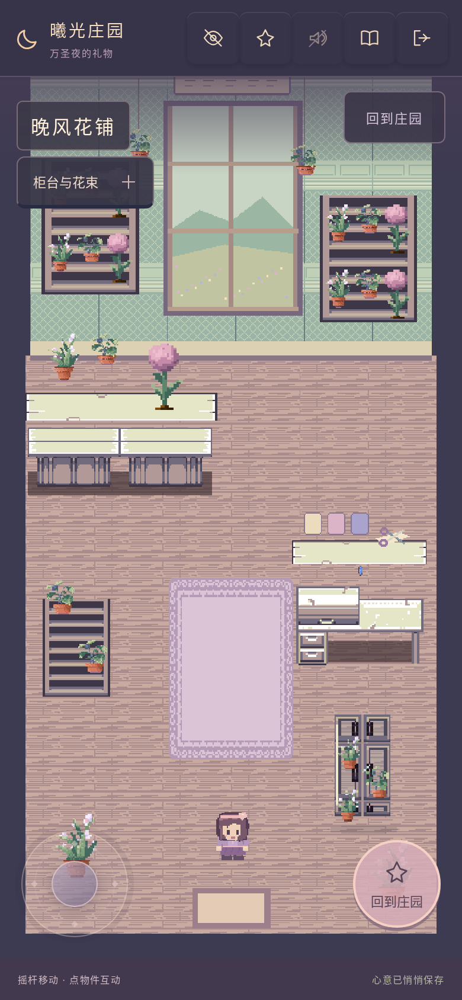
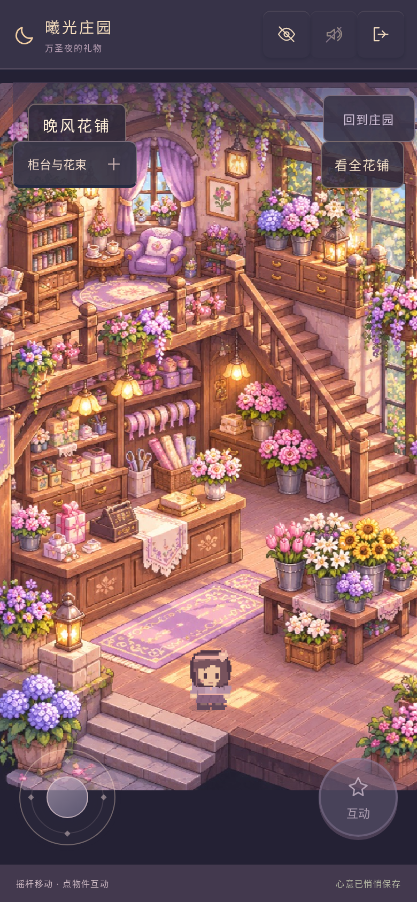
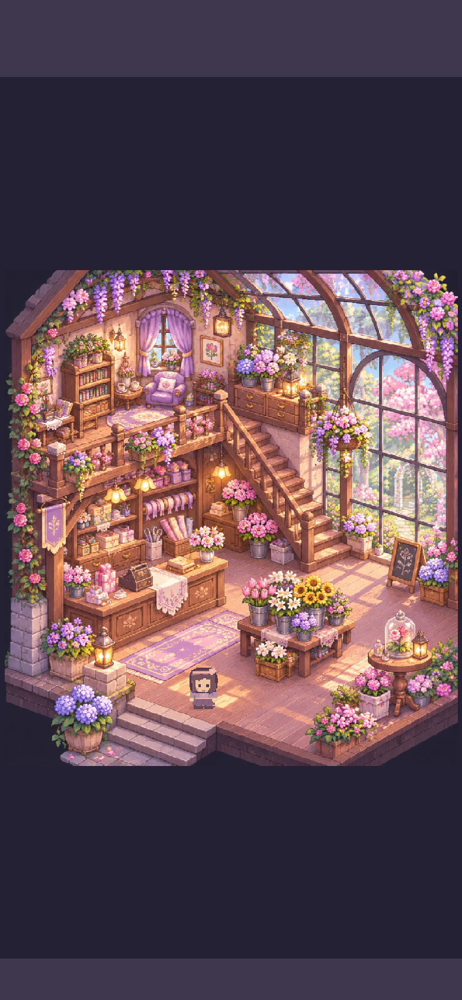
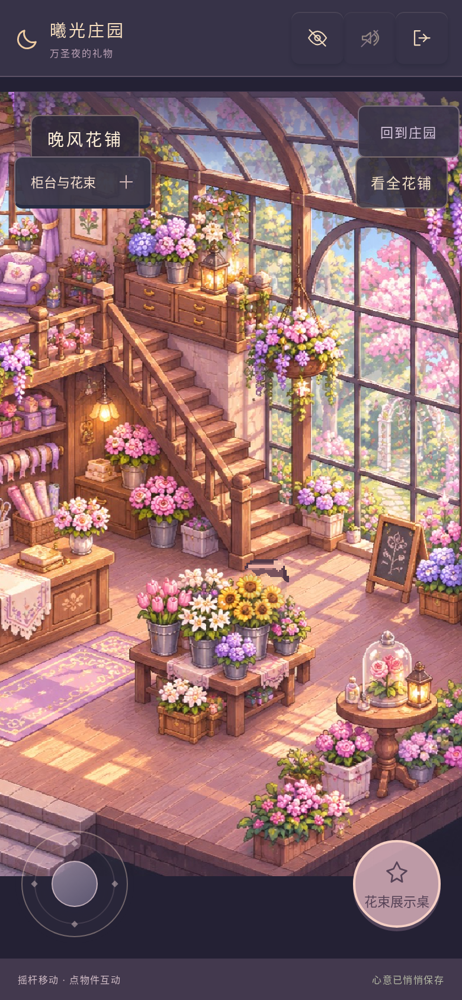
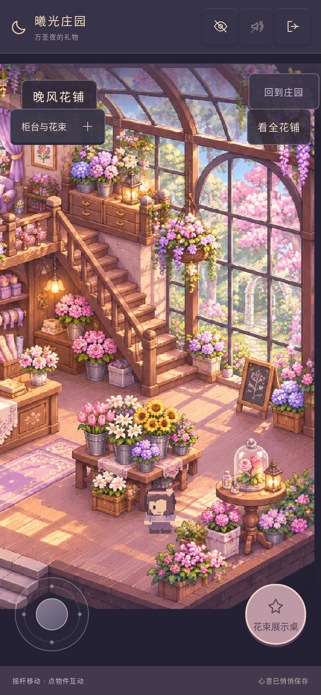

走进这张花铺原画
上传原画直接成为游戏底图。角色可以在一楼行走，柜台与家具具有碰撞；花桌前后有遮挡，原有售花、包装花束与购买家具功能继续可用。
打开手机试玩 · 查看实际使用的原图附件 · 测试记录

两版均来自真实运行游戏，手机视口 390×844、DPR 2，使用相同测试存档。新旧场景布局不同，以下为各自入口视角；没有把原图或概念图冒充实机截图。
同屏尺寸 · 旧花铺与原画花铺




完整阁楼与温室
「看全花铺」保留原图完整比例；「回到身边」恢复跟随。二楼在本阶段作为完整风景，楼梯暂不开放行走。

花桌前后 · 真实遮挡



